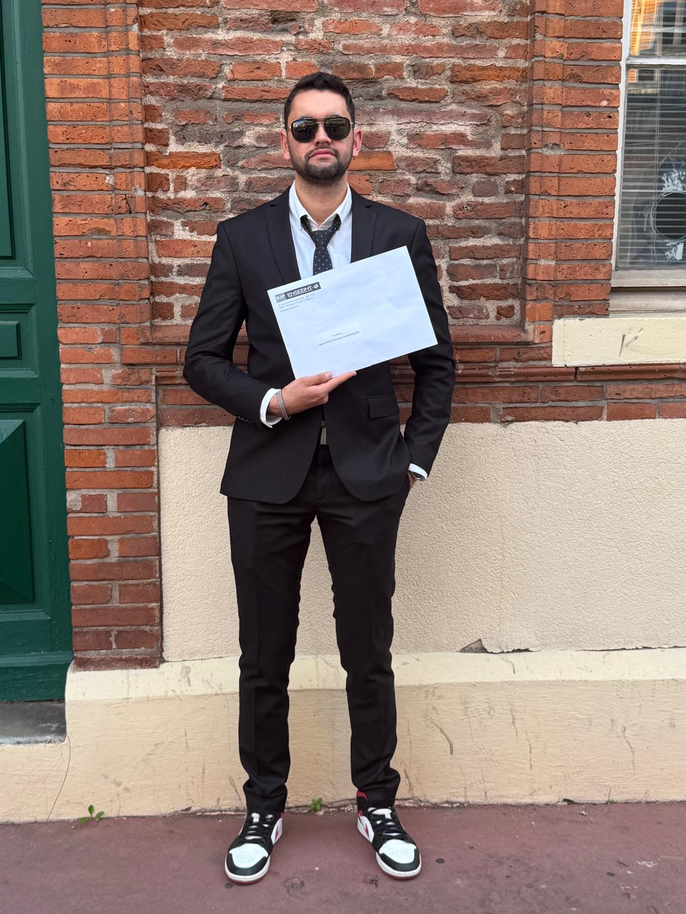

Ingénieur Systèmes Embarqués & IA embarquée
Peu d'ingénieurs couvrent à la fois le firmware bas-niveau, le traitement du signal et le déploiement de modèles IA sur silicium. C'est exactement là que je me situe: de l'implémentation FFT sur DSP embarqué jusqu'à l'inférence CNN en temps réel sur ARM Cortex-M33, avec des résultats validés en conditions industrielles chez Schaeffler et NXP.
Curieux et rigoureux, je suis à la recherche d'une nouvelle opportunité en ingénierie embarquée — passionné par l'innovation technologique et motivé par des projets ambitieux alliant technique et créativité.
Curieux et rigoureux, je suis à la recherche d'une opportunité en ingénierie embarquée — passionné par l'innovation technologique et motivé par des projets ambitieux alliant technique et créativité.

Ingénieur Systèmes Embarqués & IA embarquée · ENSEEIHT Toulouse · EHTP Casablanca
Doublement diplômé ingénieur — ENSEEIHT Toulouse (systèmes embarqués & IA) et EHTP Casablanca (génie électrique). Passionné par le challenge de faire tourner de l'intelligence artificielle dans des environnements ultra-contraints, j'ai travaillé sur des systèmes réels en conditions industrielles pendant plus d'un an et demi. Ce qui me motive : prendre un problème dur, comprendre la physique du signal, et construire la chaîne complète jusqu'à ce que ça tourne en temps réel sur silicium. En parallèle de mes formations, j'ai développé des compétences en Rust et en DevOps (Docker, GitLab CI/CD) en autodidacte, par curiosité et par conviction que l'ingénierie embarquée moderne ne s'arrête pas au firmware.
Parallèlement à mes études et expériences professionnelles, j'ai toujours cherché à m'engager activement dans des structures associatives — pour transmettre, coordonner, ou créer de l'impact.
Je suis disponible immédiatement pour des opportunités en ingénierie embarquée, firmware, IA embarquée ou traitement du signal. N'hésitez pas à m'écrire directement.
Je réponds généralement sous 24h.